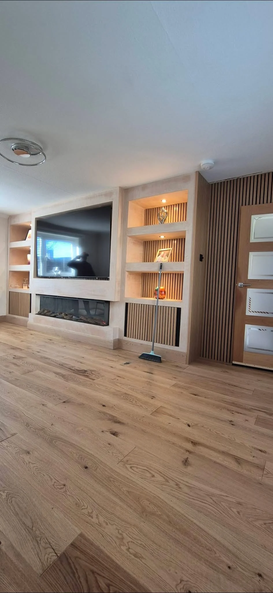
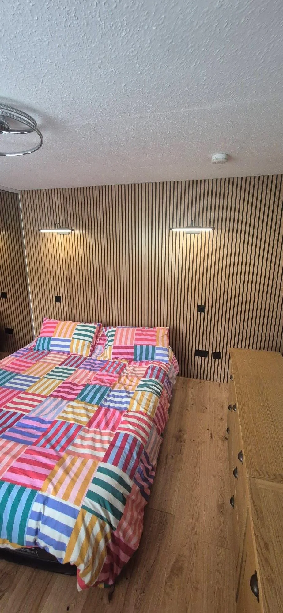
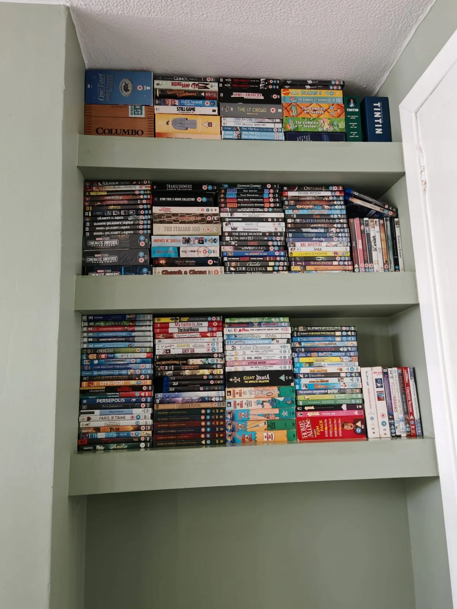
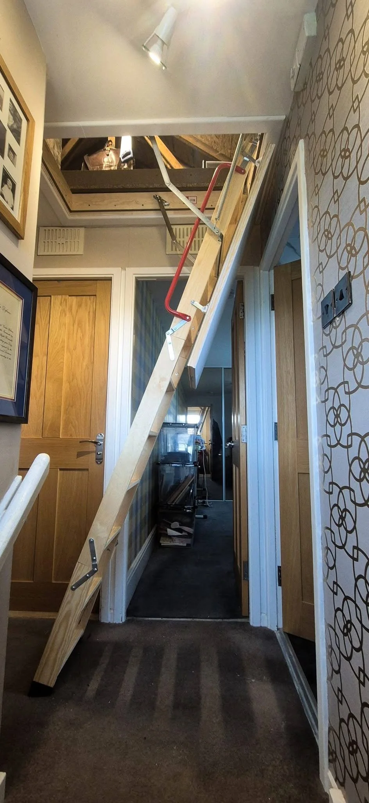
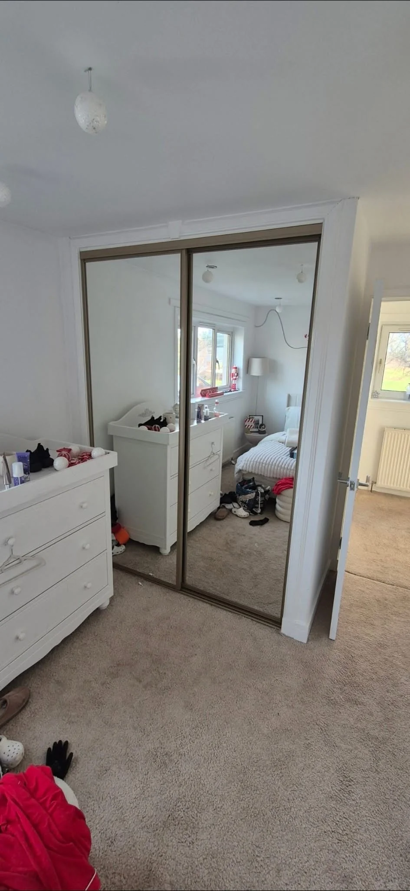
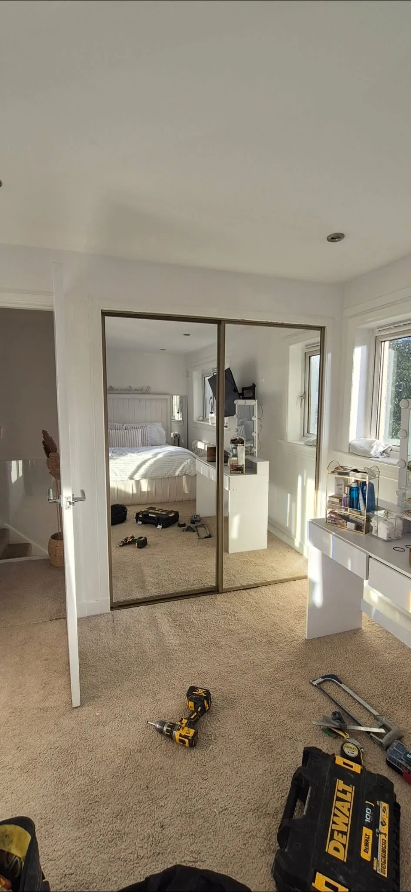
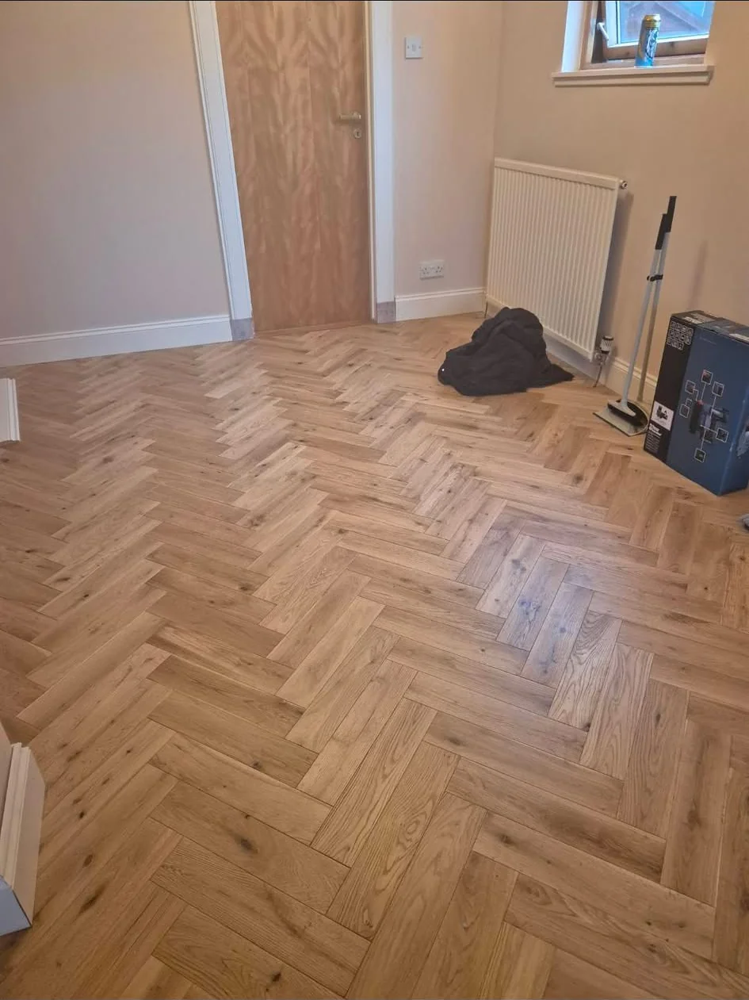
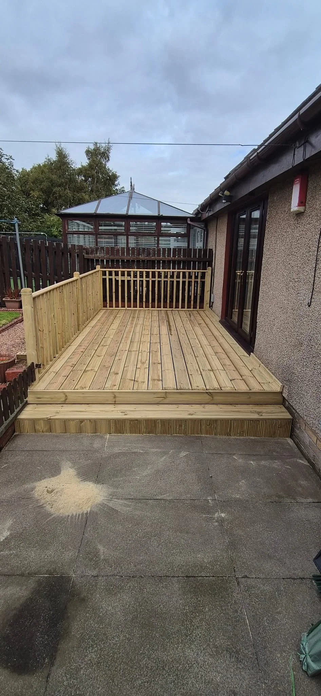

SINCLAIR JOINERY SERVICES · KIRKCALDY & FIFE
Interior Joinery.
Storage, flooring, wardrobe doors and loft access. Practical joinery that helps your home work for you.
Interior Joinery & Storage in Kirkcaldy
Interior Joinery
From mirrored wardrobe doors and recessed shelving to herringbone flooring and a loft ladder, explore the variety of our interior work. We undertake all aspects of joinery and property maintenance, so tell us what you would like to improve.
Tell us about your project →
JOINERY WITH PURPOSE
Fitted Storage
A recess can become useful storage. A loft hatch can become a more practical access point. Share photographs of the space, approximate measurements and the result you have in mind.
Request a free estimate →

OUR OWN PROJECTS
Recent Work
A selection of our projects. Open any photo to see the full image.




LOCAL JOINERY. PRACTICAL THINKING.
About Sinclair
Sinclair Joinery Services is based in Kirkcaldy, covering Fife and surrounding areas. We undertake all aspects of joinery and property maintenance, with all trades available to discuss as part of your project.
Start with a conversation about your plans.
From useful storage to a new focal point for your room.
100% recommend from 22 Facebook reviews, as shown in the supplied business profile.
USEFUL TO KNOW
Your Questions
Can I enquire about fitted storage?
Yes. Our projects include recessed shelving and mirrored wardrobe doors. Send photographs and approximate measurements of your space.
Do you undertake flooring and loft access projects?
Our photographs include herringbone flooring and a timber loft ladder with an access hatch. Tell us about your requirements for a free estimate.
Can I discuss a smaller joinery job?
Yes. We undertake all aspects of joinery and property maintenance. Describe the job and include your postcode.
LET’S MAKE A START
Get a Quote
Tell us a little about your project for a free estimate. This form opens WhatsApp with your details ready to send. You can attach photographs there too.
sinclairjoineryservices@gmail.com
07802 691362SINCLAIR JOINERY SERVICES
Discuss Your Project
Kirkcaldy · Fife & surrounding areas
All aspects of joinery and property maintenance.